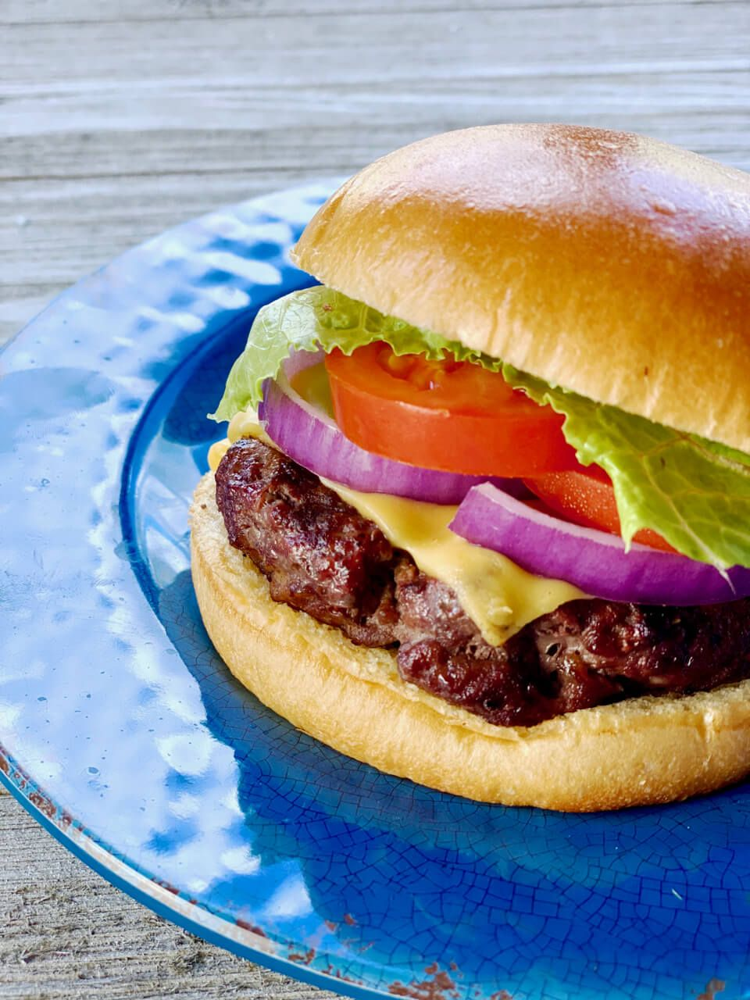

Homemade Burger

Prep Time: 15 mins
Yield: 4 servings
Ingredients:
- 500g ground beef
- 1 teaspoon salt
- 1/2 teaspoon black pepper
- 1 teaspoon garlic powder
- 4 burger buns
- 4 slices cheddar cheese
- Lettuce, tomato, and onion (optional)
- 2 tablespoons mayonnaise
- 1 tablespoon ketchup
Steps:
- Mix ground beef with salt, pepper, and garlic powder.
- Shape into 4 equal-sized patties.
- Heat a pan or grill over medium-high heat and cook patties for about 4 minutes per side.
- Place a slice of cheddar cheese on each patty and let it melt.
- Toast burger buns lightly.
- Spread mayonnaise and ketchup on the buns.
- Assemble the burger with lettuce, tomato, onion, and the cooked patty.
- Serve hot and enjoy!